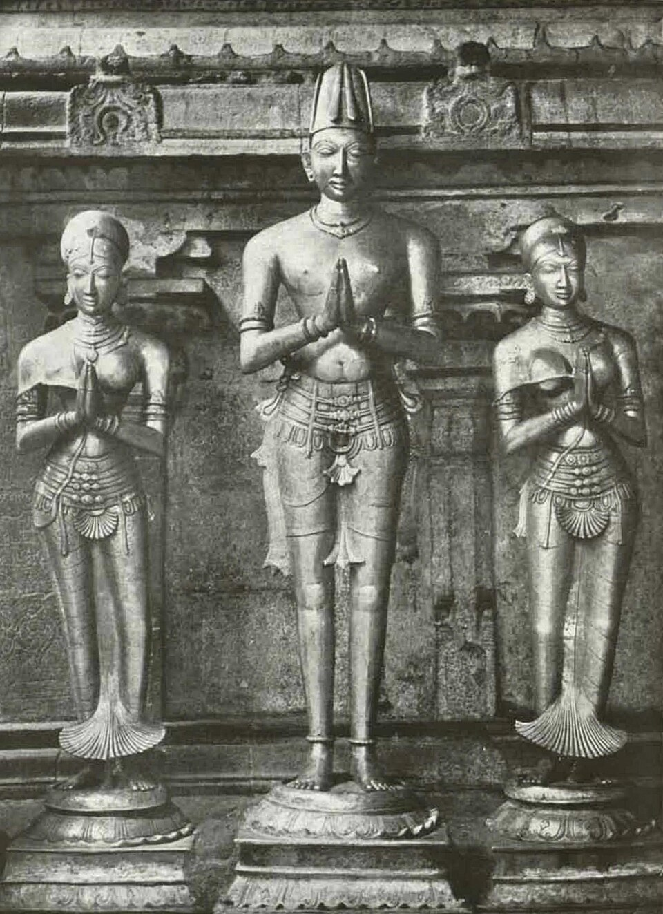

Krishnadevaraya
Krishnadevaraya of the Tuluva dynasty ruled Vijayanagara from 1509 to 1529, the reign in which the empire reached its greatest extent and its capital its greatest size.

Krishnadevaraya came to the throne of Vijayanagara in 1509 on the death of his half-brother Vira Narasimha, the second ruler of the Tuluva line that had taken the kingship from the Saluvas. He reigned for twenty years, until his death in 1529, and was succeeded by his brother Achyutadevaraya. The Portuguese visitor Domingos Paes, who saw him in about 1520, described a man of medium height with a pock-marked face, cheerful and ‘the most perfect king’ he could imagine.
The reign was one long campaign. He broke the rebel chiefs of Ummattur in the south, took Udayagiri and Kondavidu from the Gajapati kings of Orissa and pushed as far as Cuttack before making peace and marrying a Gajapati princess, and in 1520 defeated Ismail Adil Shah of Bijapur at Raichur, recovering the doab between the Krishna and Tungabhadra. His minister Saluva Timmarasu, remembered as Timmarusu, managed the administration; his relations with the Portuguese at Goa secured horses and, at Raichur, gunners.
He was also a builder and a patron. At the capital he raised the Krishna temple to house an image taken from Udayagiri, enlarged the Virupaksha temple with its eastern gopura, and began the great works at the Vitthala temple. His court is remembered for its Telugu poets, and he wrote himself: Amuktamalyada, a Telugu court poem that contains a passage of political advice drawn from his own experience.
His death in 1529 left the state strong but the succession weak. Achyuta faced the Bijapur claim on the doab again almost at once, and the family of Krishnadevaraya’s son-in-law Rama Raya moved steadily toward the centre of power. The reign fixed the image of Vijayanagara at its height, the standard by which everything after 1529 was measured.
In the story
Krishnadevaraya is the collection’s model of a Deccan ruler who worked the layered system rather than abolishing it. He fought the sultanates, hired their gunners, traded with the Portuguese and governed through subordinate nayakas. Phillip Wagoner’s phrase ‘sultan among Hindu kings’, drawn from a Vijayanagara royal title, fits him: his court borrowed dress, titles and military practice across the frontier. The entry anchors the Vijayanagara side of ‘two Deccans’ and shows how porous the line between them already was.
In the map collection
Fries, after Waldseemüller, Tab. Moderna Indiae (1525)
In the chronology
- 1509–1529Krishnadevaraya’s reign marks Vijayanagara’s political and monumental zenith; campaigns against the Gajapatis between 1512 and 1519 establish Vijayanagara predominance south of the Krishna in the east, and the Telugu poem Amuktamalyada is associated with his court.
Sources
- Srinivas Reddy, Raya: Krishnadevaraya of Vijayanagara (Juggernaut Books, New Delhi, 2020)
- Robert Sewell, A Forgotten Empire (Vijayanagar): A Contribution to the History of India (Swan Sonnenschein, London, 1900)
- Phillip B. Wagoner, 'Sultan among Hindu Kings': Dress, Titles, and the Islamicization of Hindu Culture at Vijayanagara, Journal of Asian Studies 55 (4), pp. 851–880 (Association for Asian Studies, 1996)